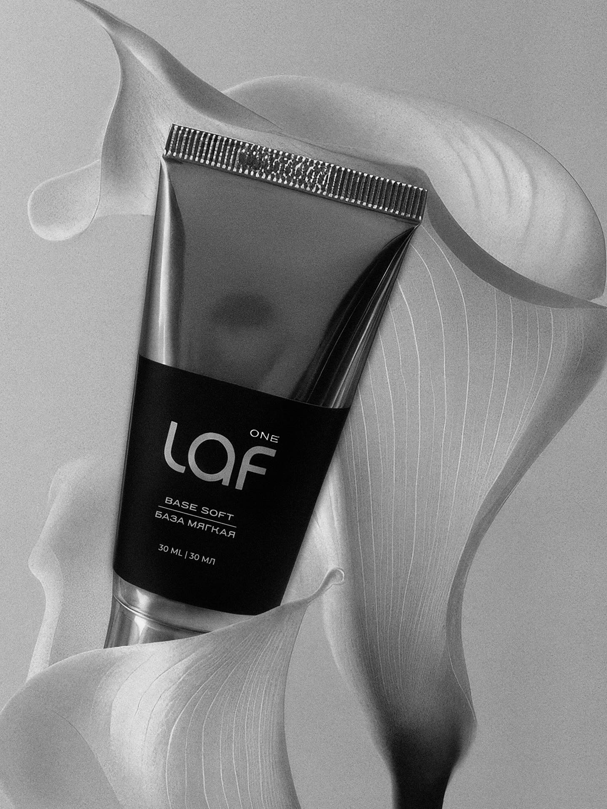
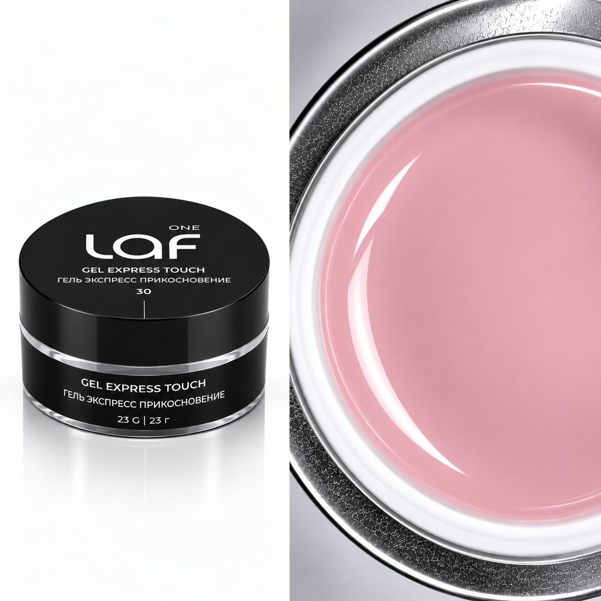
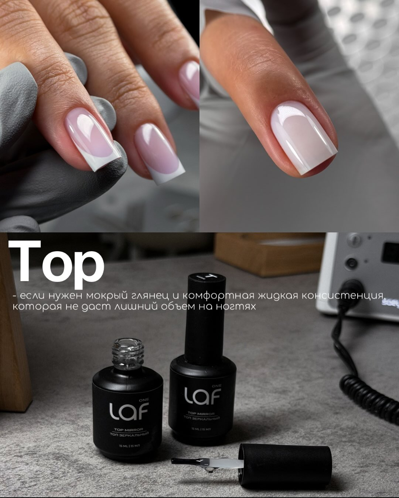

ONELAF / PROFESSIONAL NAIL MATERIALS01 — 04
Для тех, кто знает цену детали
Материал
имеет
значение.
Базы, топы и гели ONELAF для работы, в которой важен каждый этап — от подготовки до финального покрытия.
ФОРМА / ФУНКЦИЯ / ФИНИШПрокрутите вниз ↓

BASE SOFT ↗BASES ✳ TOPS ✳ GELS ✳ DETAILS ✳ ONELAF
Материалы ONELAF
Базы. Гели.
Финиш.
01 / ОСНОВА
Базы.
Основа определяет, как дальше ляжет покрытие. Base Soft — мягкая база средней консистенции для профессиональной работы.
BASE SOFT / ONELAF
02 / МОДЕЛИРОВАНИЕ
Гели.
Гели помогают выстроить архитектуру ногтя и выбрать нужный оттенок. В центре этой сцены — Gel Express Touch.

GEL EXPRESS TOUCH / ONELAF03 / ЗАВЕРШЕНИЕ
Финиш.
Финиш определяет, как будет выглядеть готовая работа. Top Mirror — зеркальный топ ONELAF для завершающего слоя.

TOP MIRROR / ONELAF BEHIND THE BRAND / ONELAF
BEHIND THE BRAND / ONELAFЗа продуктом
У бренда
есть имя.
ONELAF основала Людмила Филатова. На странице о бренде — её взгляд на материалы и работу с мастерами.
О Людмиле ↗Следующий шаг